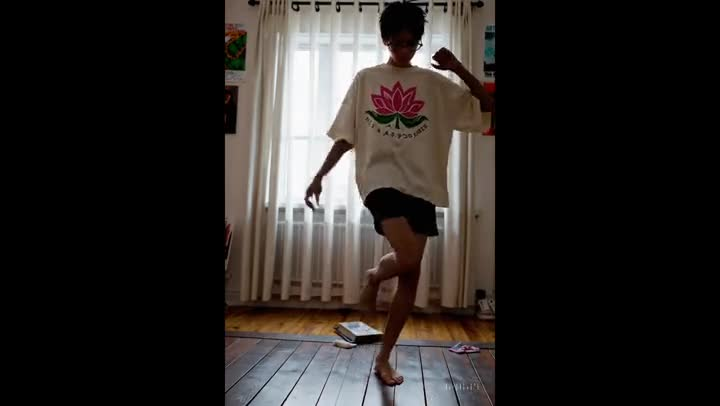
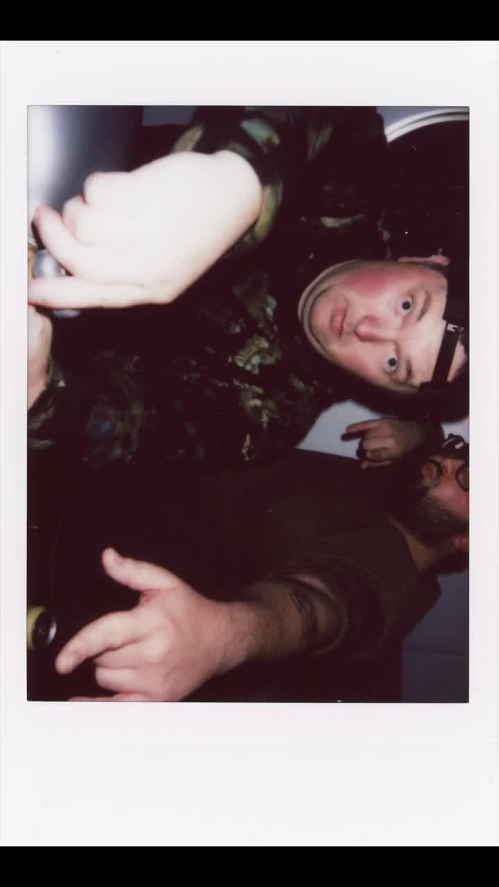
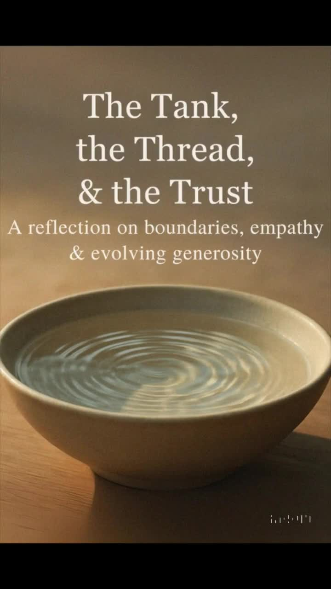

SIX CURRENTS · ONE HOME
Deeper Waves
From campus and club to life in motion, daily practice, and quiet reflection. Six spaces with their own energy.

CAMPUS · SOUND · STUDIES
GDB Wave / GDB University
Orientation, campus objects, Low End Studies, and films. A fictional university built around bass and dancefloor energy.
Enter the campus ↗
REAL FOOTBALL · PERSONAL FANDOM
Arsenal
The real club: live matchday, red-and-gold editorial studies, culture, and the bridge into La Ola FC.
Enter the Arsenal world ↗

wave.LIFE LOG · NO NARROW LANE
LIFE · MOTION · THE EDIT SHELF
Offbrand Wave
Three recovered films, everyday memories, and a life log that keeps moving on TikTok.
Open the edit shelf ↗HEALTH · HABITS · DAILY PRACTICE
Willpwr Wave
A simple daily check-in for movement, energy, and reflection. Optional notes stay on your device.
Open the daily check-in ↗
PHILOSOPHY · FLOW · REFLECTION
Wu Wei Wave
A recovered reflection on boundaries, energy, and what we choose to carry. A quieter current.
Enter the reflection ↗
MASCOT · HUMOR · EVERYDAY JOY
Capybara Wave
Mascot, humor, and everyday joy. A playful entrance into the Capybara current.
Meet the mascot world ↗